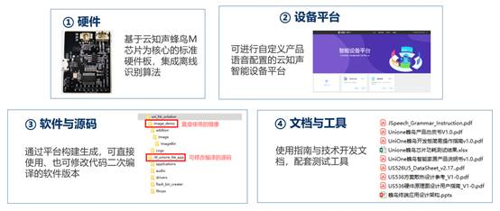

|
蜂鸟M离线方案开发指导手册
v1.0.4
|
云知声总部位于北京，在上海、深圳、厦门设有全资子公司。是一家专注物联网人工智能服务、拥有完全自主知识产权的世界顶尖的智能语音识别和语义理解技术的高新技术企业。自2012年由智能语音技术起家，云知声多年来不断拓展技术边界，技术能力不仅涵盖了感知、认知、交互等方面的人工智能语音语义技术，更是在突破了 AI 芯片设计技术后，一举打造出了自主研发、自主知识产权、自主可控的全栈式人工智能技术链条（深度学习算法+大数据+超级计算+芯片能力）。
以强大的计算平台为基础，云知声构建了“云端芯”生态体系，提供跨硬件平台、跨应用场景的软硬件一体化云端+本地智能的芯片终端解决方案。目前云知声是迄今为止行业内唯一实现芯片落地应用的公司、国内白色家电领域领先AI芯片供应商、国内首家推出医疗云服务并完成数百家医院系统测试的语音服务商、我国后装车机市场占有量行业第一、教育云社会化口语评测服务市场占有量第一。还在智慧生活（家居、车载、机器人等）和智慧服务（医疗、教育、司法等）等多个垂直场景均有落地应用。
云知声提供标准化软硬件一体离线语音解决方案，支持单麦拾音、前端降噪、语音唤醒、离线识别等。用户使用方案中的标准化硬件模组配合云知声设备平台与相关工具，快速定制语音产品，为空调、冰箱、灯具、开关等家居设备赋能，无需联网即可使其具备智能语音交互能力。
- 硬件：基于云知声蜂鸟M芯片为核心的标准硬件板，集成离线识别算法
- 开放平台：可进行语音相关配置并生成软件版本的云知声智能设备平台
- 软件与源码：可直接使用，也可修改代码进行二次编译的软件版本
- 文档与工具：使用指南与技术开发文档，配套测试工具
